AquilaInsight
An AR interface that makes breast-cancer surgery more precise and safe.
Jan – May 2024 · 15 wks
UI/UX Design
Design Research
Biosensor Lab @ UIUC
IDA Design Awards · IDEA

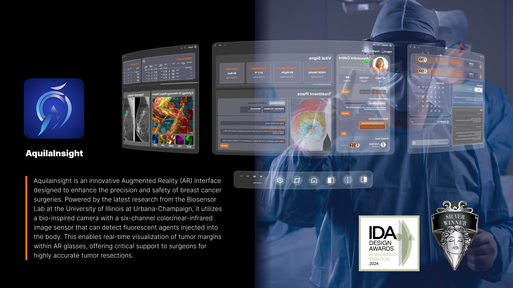
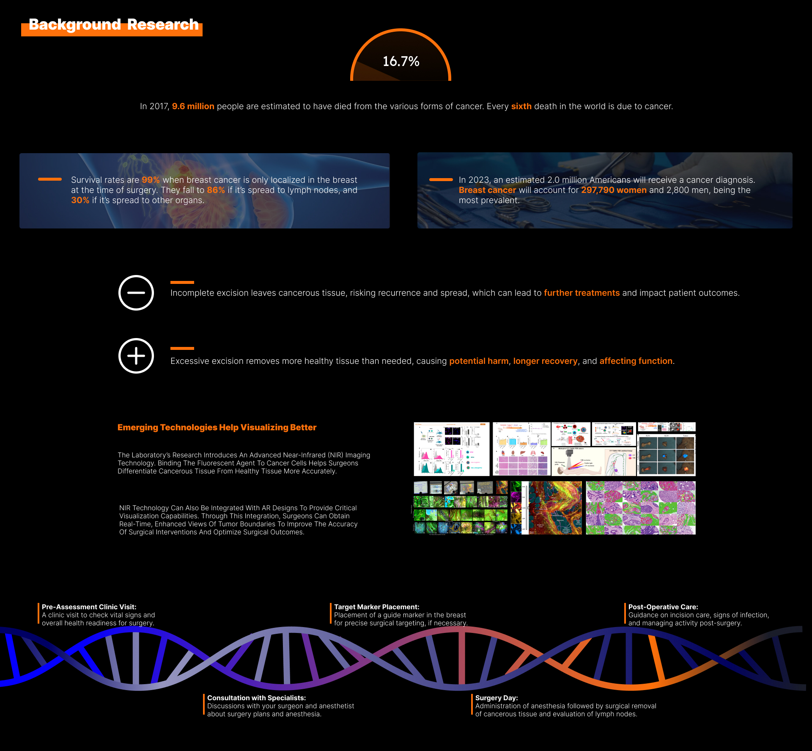
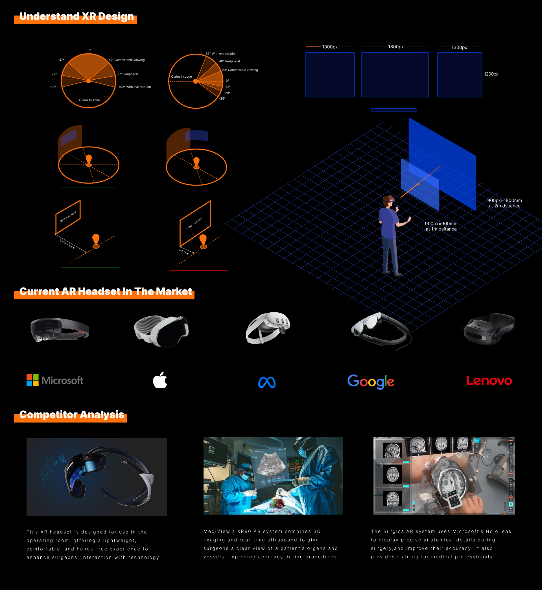
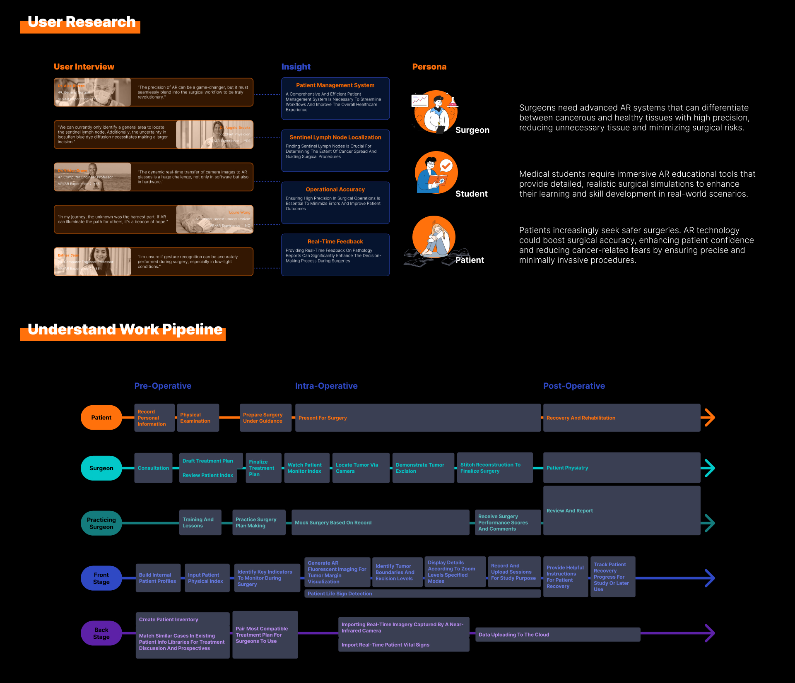
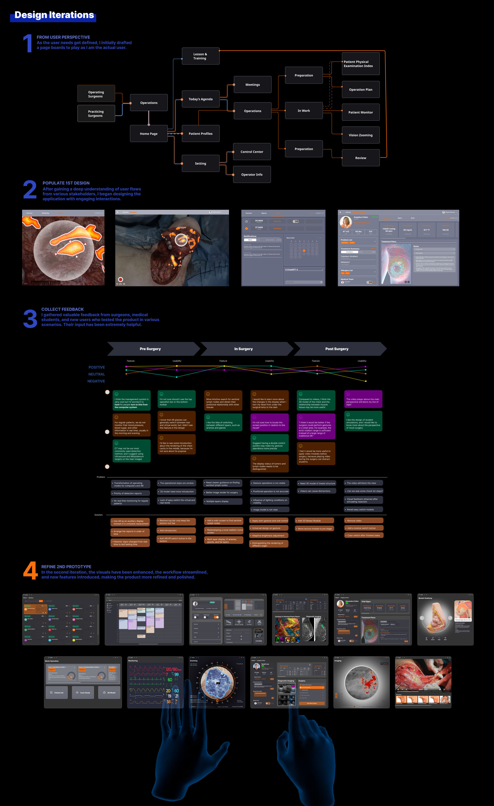
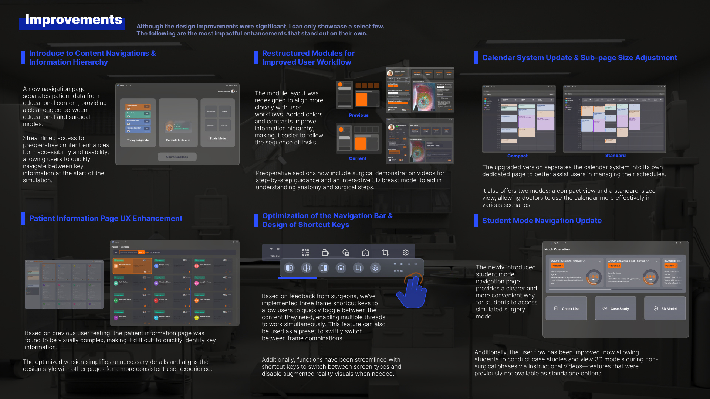
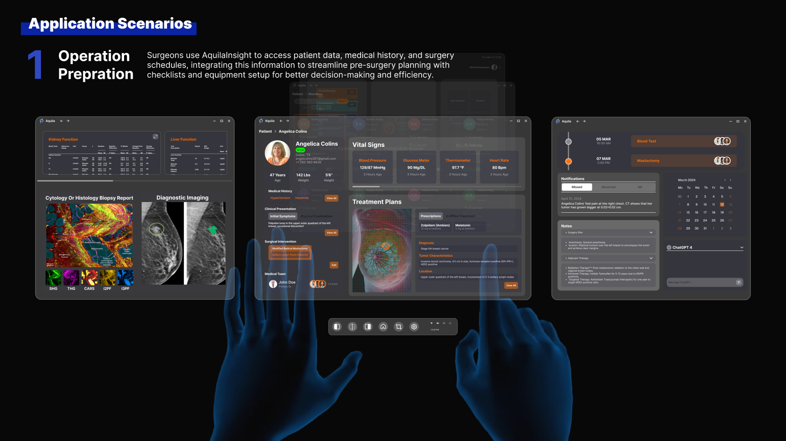
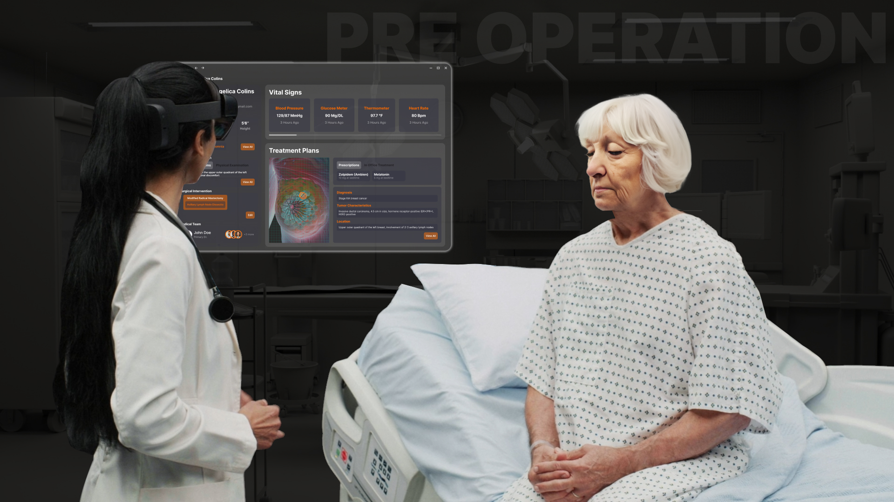
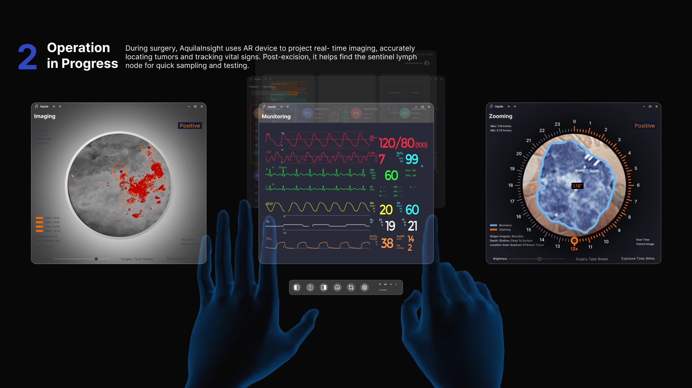
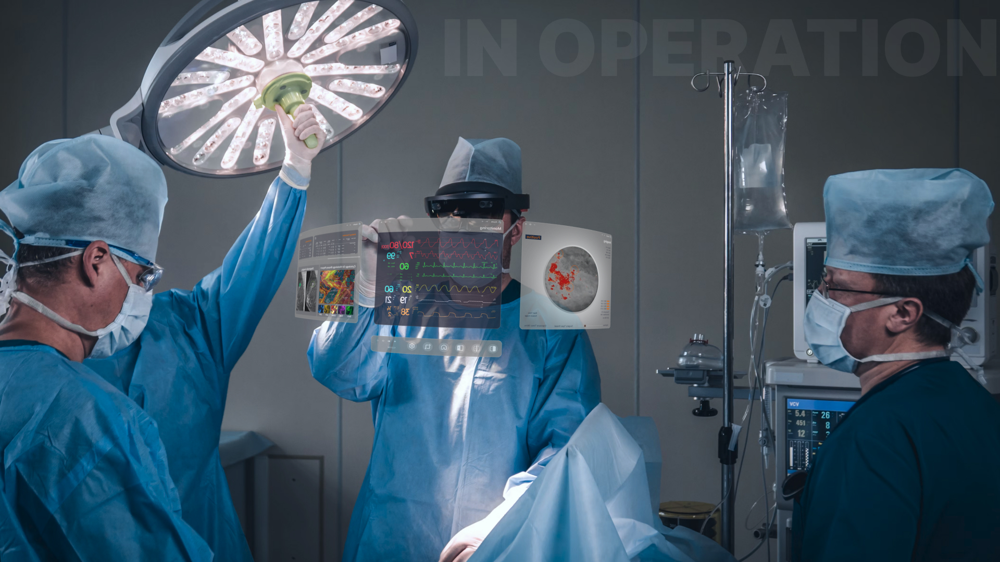
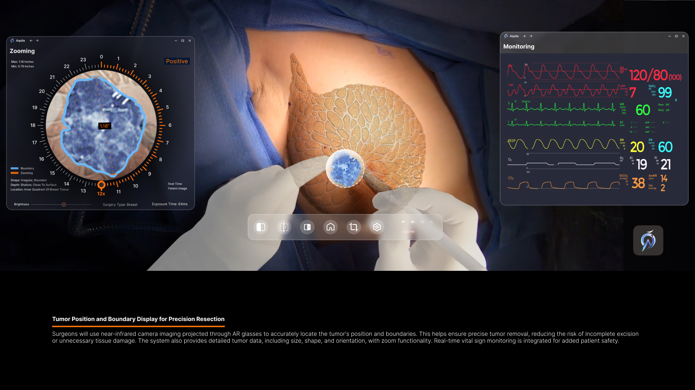
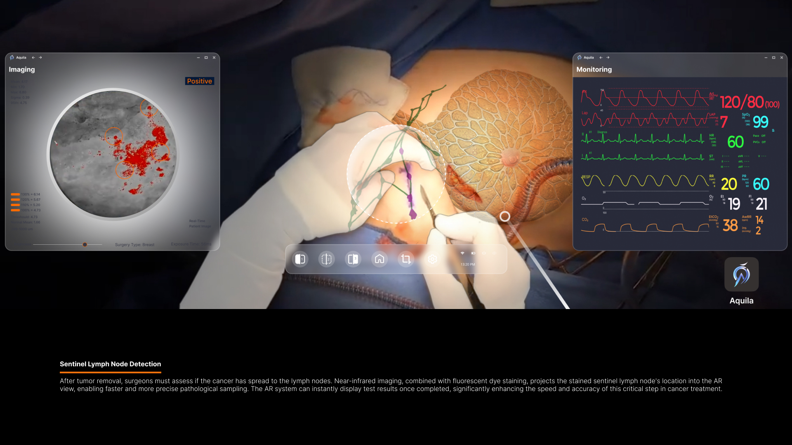
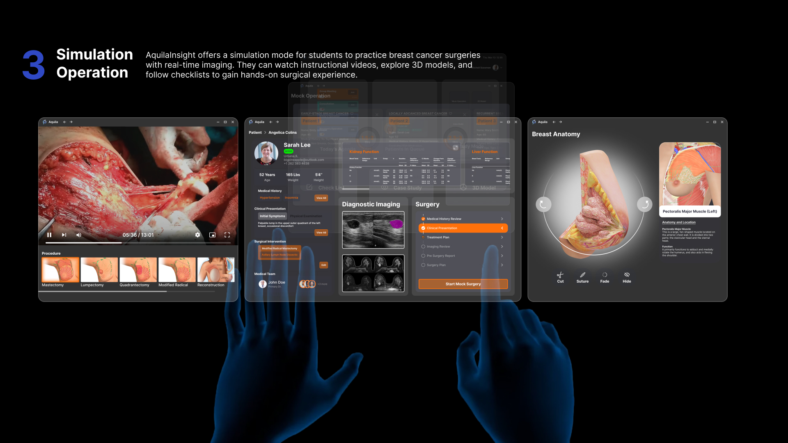
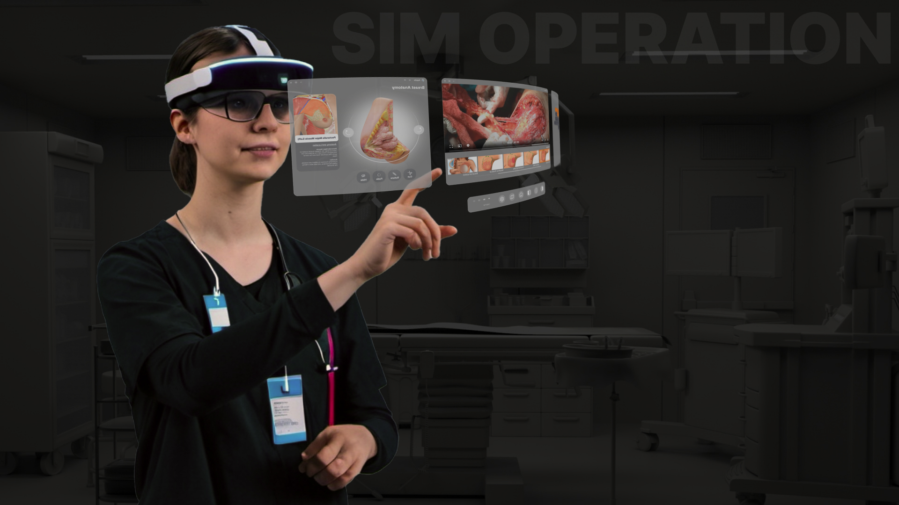
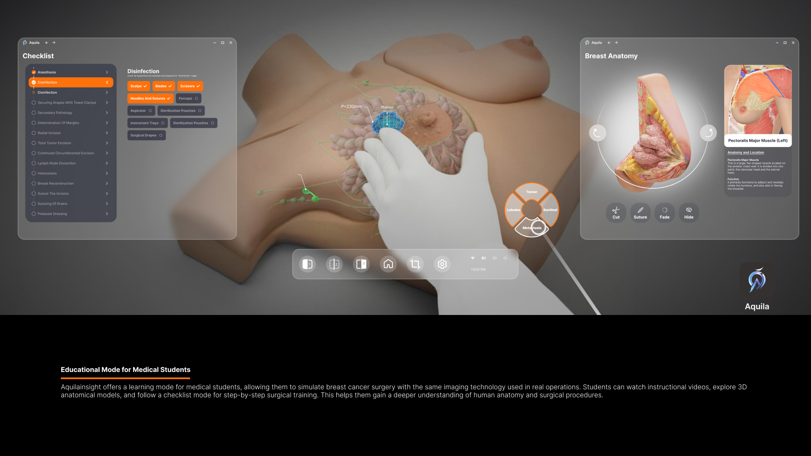
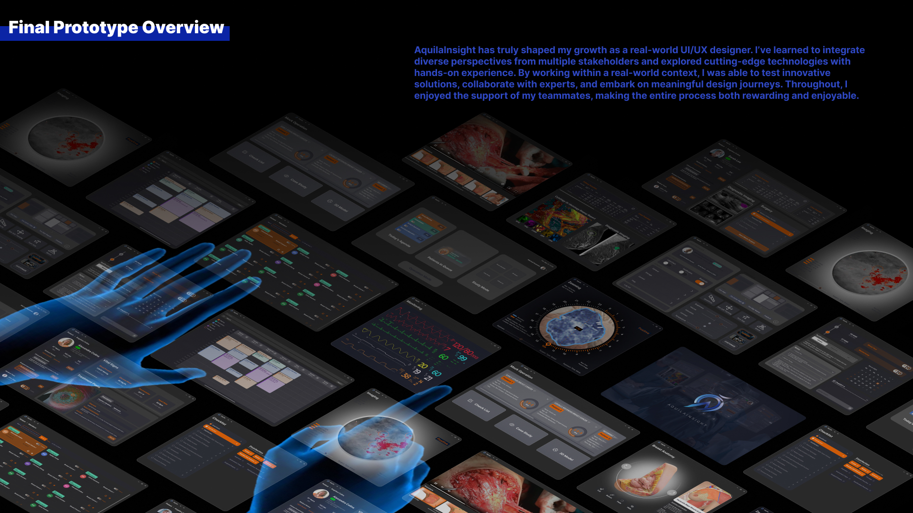